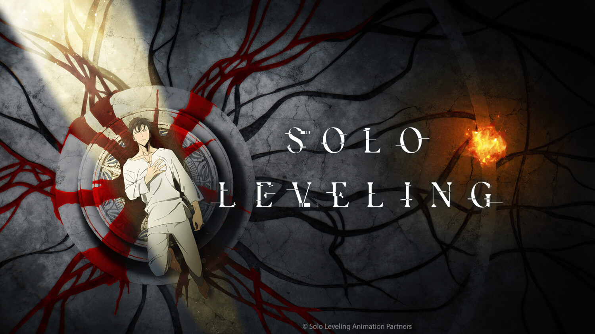

QIZIQARLI

Bundan 10 yil muqaddam dunyo bo'ylab ma'lum bir “darvoza”lar ochilib boshlangan endi. Bu darvozalar maxluqotlar yashaydigan yerostiga olib borar edi. U yerdagi maxluqlarga hatto harbiy qo'shin ham bas kelolmas edi. Ammo yerostidagi maxluqlar qirolini vaqtida yengsa, darvozalar to'liq ochilmay qoladi, ko'zdan g'oyib bo'lib, tinch aholi o'z osuda hayotiga qaytadi. Maxluqlar qiroli bilan jang qila oladiganlar tanlanganlar xolos — maxluqotlar bilan olishish uchun qo'lga kiritgan maxsus kuch-qobiliyatlari bor jangchilardir. Bundaylarni “ovchilar” deb atashadi. Ovchilar esa turli xil qobiliyatdan tortib, ishlash prinsipi jihatidan farq qiladigan xilma-xil kuchlar sohibiga aylanishadi. Masalan, ovchi Son Jinu eng quyi darajaga — E'ga tegishli. Oddiy odamlardan kuchli bo'lsa-da, har qaysi ovchidan bir necha borga kuchsiz. U yakka holda eng zaif va nimjon maxluqni ham yenga olmagani sabab guruh bo'lib, yerostiga jang qilishga tushishga majbur. Sheriklari yo'lidan chiqqan har qaysi maxluqlarni birinchi bo'lib mag'lub etar ekan, Son Jinuga na bir o'lja tegadi, jangchi sifatida o'sa olmay qolib ketadi. Puldan qiynalayotganini hisobga olsak, qurol-aslahalarini yangilashga imkoni ham yo'qligi tayin. Bir gap bilan, bolaning ahvoli chatoq. Biroq u ovchilikka aslo qo'l siltamaydi, zero uning yaqini — komada ikki dunyo oralig'ida yotgan onasining kasalxonadagi qarzidan qutulmasa bo'lmaydi. Biroq hammasi o'zgarib ketdi. Guruhi bilan quyi darajadagi yerostiga tushgan o'sha kun ular juda bir g'alati buyumga duch kelishdi. Tozalangan yerosti ichida yana bir yashirin yerosti borligini aniqlashdi. Istar-istamas ular ichkariga kirishdi. Kirishdi-yu o'sha yerning o'zida Son Jinuning joni uzildi. Kasalxonada o'ziga kelar ekan, tirik va lat ham yemaganiga amin bo'ldi. Shunda to'satdan uning nigohi oldida o'yin interfeysiga o'xshash tasvir uzatila boshladi. Bu boshqa nimaga ham shama qilardi: o'yin boshlandi! Ovchilar orasida eng nimjoni endilikda yakka tartibda o'z darajasini osmonlarga ko'tarish vaqti keldi!
YANGILIKLAR

Oq Iblis, ketma-ket qotil, bu uning hayotining maqsadi ekanligini ta'kidlab, beparvolik bilan o'ldirish orqali aholini qo'rqitdi. Ko'proq qurbonlarni qidirib, u ichkariga kirdi qonunsiz shahar, u erda Crimson bilan to'qnashdi va mag'lubiyatga uchradi va oxir-oqibat qo'riqchi uchun Crimson minorasi shaharda. Bir kuni qizil oy qorovulda turib, qonunsiz shahardagi barcha arvohlar orasida g'azabni keltirib chiqaradi va tartibsizlikni keltirib chiqaradi va odamlarni jonsiz hayvonlarga aylantiradi. Bunga guvoh bo'lgan oq Jin ozod bo'lishni va odamlarni ham, arvohlarni ham o'ldirish imkoniyatidan foydalanishni xohlaydi. Biroq, uning belgilangan masofadan o'tib keta olmasligi uni shubhali shaxslarning yaqinlashishini kutishga majbur qiladi. Uning kutishi paytida uch kishi qizil minora darvozasiga yaqinlashadi. Ular Juggernaut, zolim, qora minoraning hukmdori; Yukime, Ruh tulki, oq minoraning hukmdori va butunlay qora kiyingan sirli odam, uning kuchi tushunarsiz bo'lib qolmoqda. Juggernaut o'zining katta pichog'ining bitta qudratli tebranishi bilan Crimson minorasining artefakt darvozasini yorib o'tadi va ichkariga qadam qo'yadi, Yukime esa yaqindan ergashadi. Ularning orqasida qora yo'llarda odam. Oq Jin qora tanli odamga hujum qilishga qaror qiladi, qolgan ikkitasini uning qobiliyatidan tashqarida deb biladi. Bir zumda u tanasining yarmiga bo'linib, erga qulab tushganiga guvoh bo'ladi. Aynan shu paytda oq Jin hech qachon hujum qilmasligi kerak bo'lgan odamni qo'zg'atib, jiddiy xato qilganini tushunadi.